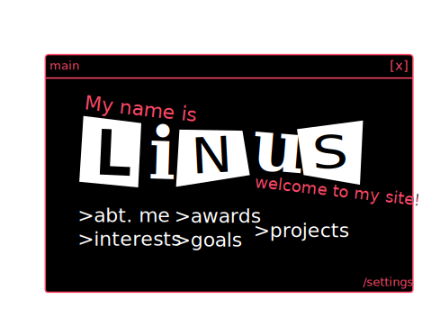

main

Welcome! Choose a window to explore my work and info.
Welcome! Choose a window to explore my work and info.
Write your short bio here: who you are, what you’re interested in, etc.
You can add more paragraphs, links, or images.
• Project 1 – short description and link
• Project 2 – short description and link
• Project 3 – short description and link
List your languages, tools, frameworks, etc.
Example: HTML, CSS, JavaScript, Python, etc.